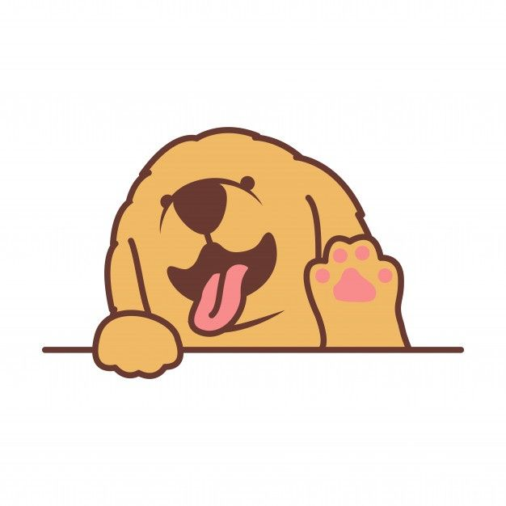

About Me
Hi! My name is Sami like mentioned on the home page. I'm 16 years old, and I am a senior in High School. I can't wait to graduate!

I'm planning on enlisting in the Air Force as of now, but I don't think it will change. Cybersecurity and coding are somethings I am really interested in and love. I am a Staff Sergent in Civil Air Patrol, and it has been so much fun. I joined late since I joined as a junior, but it's worth it. CAP has been such a great opportunity for me.
One thing about me is i absolutely love music. In my family we always learn how to play the piano and can switch to a different instrument at 11. Once I turned 11, I quit piano and started to play the flute. after that some guitar and ukulele lessons followed at different times, and now I can play, not necessarily good at them tho, the flute, piano, guitar, ukulele, and I have been able to pick out a song on a dulcimer before.
Kpop is my favorite genre in general if you couldn't tell, but I like and can listen to most anything. For any kpop stans, I like so many groups. BTS is my ult(obviously lol), but I love Mamamoo, Ateez, Stray Kids, IZ*ONE, Enhypen, Seventeen, TXT, Oneus, and CLASS:y. There are more, but those are my favorites.
I also love computers. Coding is one of my favorite hobbies, and I've competed in a bunch of different ctfs (capture-the-flag competitions). For two years I was a part of a Cyberpatriot team, and we did well (in my opinion). This coming year I will also be apart of it again, but with a different team. In my portfolio there is more information.
Honestly there is a lot I could put here. For example that I love sports or that I love animals (both are true), but I'm going to leave it here for now. Now go check out my portfolio page!